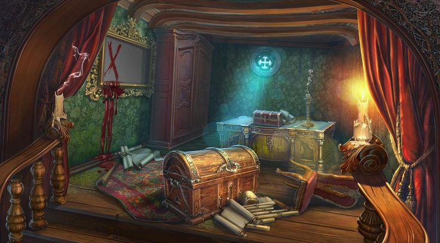

Te das cuenta de que hay corriente por los bordes del estante
De repente las voces dejan de escucharse
Entras a lo que parece ser una habitación oculta
La puerta se cierra de golpe tras entrar y una risa siniestra retumba por toda la habitación
¿Se te ocurre algo?
No sabes que hacer
Exploras la sala
Observas la puerta cerrada
